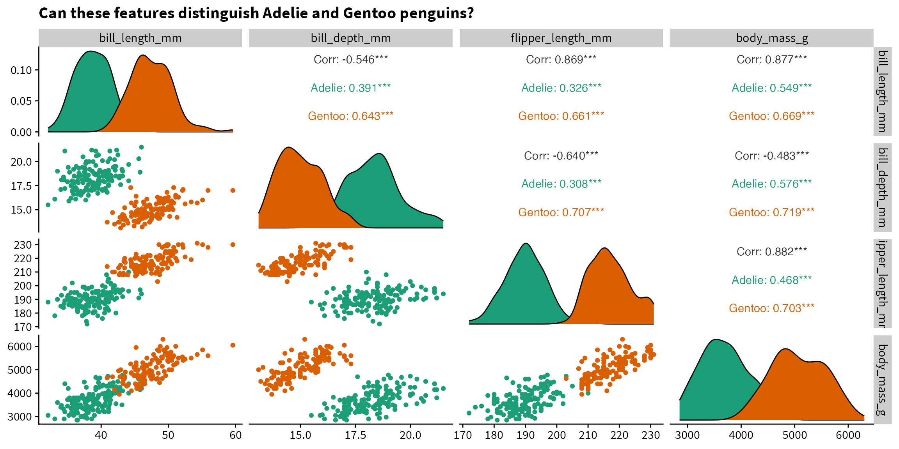
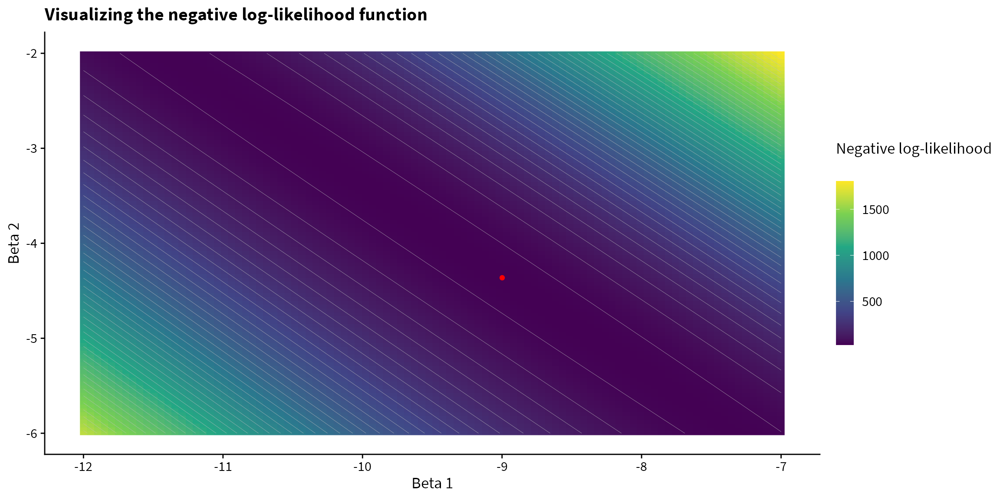

Overview
Logistic regression is a method for estimating the probability that an observation is in one of two classes given a vector of covariates. For example, given various demographic characteristics (age, sex, etc…), we can estimate the probability that a person owns a home or not. Important predictors would likely be age and level of income. The probabilities returned by the model can then be used for classification based on a cutoff (e.g., 0.5 is a common choice) or used for decision making based on more complex decision rules1.
1 This article goes into more detail on the difference between prediction of probabilities and classification.
In this post, we’ll explore how logistic regression works by implementing it by hand using a few different methods. It can be bit of a black box using the built-in functions in R, so implementing algorithms by hand can aid understanding, even though it’s not practical for data analysis projects.
Data
As an example dataset, we will use the Palmer Penguins data. The data includes measurements on three penguins species from an island in the Palmer Archipelago.
We’ll load the data and save it as a data frame df.
Code
# Load and rename data
data(penguins)
df <- penguinsThen we will
- filter to two of the penguin species: Adelie and Gentoo
- create a binary variable,
adeliecorresponding to 1 for Adelie and 0 for Gentoo - select a subset of columns to keep
Exploratory data analysis
You can explore the raw data below.
| species | adelie | bill_length_mm | bill_depth_mm | flipper_length_mm | body_mass_g |
|---|---|---|---|---|---|
| Adelie | 1 | 39.1 | 18.7 | 181 | 3750 |
| Adelie | 1 | 39.5 | 17.4 | 186 | 3800 |
| Adelie | 1 | 40.3 | 18.0 | 195 | 3250 |
| Adelie | 1 | 36.7 | 19.3 | 193 | 3450 |
| Adelie | 1 | 39.3 | 20.6 | 190 | 3650 |
| Adelie | 1 | 38.9 | 17.8 | 181 | 3625 |
| Adelie | 1 | 39.2 | 19.6 | 195 | 4675 |
| Adelie | 1 | 34.1 | 18.1 | 193 | 3475 |
| Adelie | 1 | 42.0 | 20.2 | 190 | 4250 |
| Adelie | 1 | 37.8 | 17.1 | 186 | 3300 |
| Adelie | 1 | 37.8 | 17.3 | 180 | 3700 |
| Adelie | 1 | 41.1 | 17.6 | 182 | 3200 |
| Adelie | 1 | 38.6 | 21.2 | 191 | 3800 |
| Adelie | 1 | 34.6 | 21.1 | 198 | 4400 |
| Adelie | 1 | 36.6 | 17.8 | 185 | 3700 |
| Adelie | 1 | 38.7 | 19.0 | 195 | 3450 |
| Adelie | 1 | 42.5 | 20.7 | 197 | 4500 |
| Adelie | 1 | 34.4 | 18.4 | 184 | 3325 |
| Adelie | 1 | 46.0 | 21.5 | 194 | 4200 |
| Adelie | 1 | 37.8 | 18.3 | 174 | 3400 |
| Adelie | 1 | 37.7 | 18.7 | 180 | 3600 |
| Adelie | 1 | 35.9 | 19.2 | 189 | 3800 |
| Adelie | 1 | 38.2 | 18.1 | 185 | 3950 |
| Adelie | 1 | 38.8 | 17.2 | 180 | 3800 |
| Adelie | 1 | 35.3 | 18.9 | 187 | 3800 |
| Adelie | 1 | 40.6 | 18.6 | 183 | 3550 |
| Adelie | 1 | 40.5 | 17.9 | 187 | 3200 |
| Adelie | 1 | 37.9 | 18.6 | 172 | 3150 |
| Adelie | 1 | 40.5 | 18.9 | 180 | 3950 |
| Adelie | 1 | 39.5 | 16.7 | 178 | 3250 |
| Adelie | 1 | 37.2 | 18.1 | 178 | 3900 |
| Adelie | 1 | 39.5 | 17.8 | 188 | 3300 |
| Adelie | 1 | 40.9 | 18.9 | 184 | 3900 |
| Adelie | 1 | 36.4 | 17.0 | 195 | 3325 |
| Adelie | 1 | 39.2 | 21.1 | 196 | 4150 |
| Adelie | 1 | 38.8 | 20.0 | 190 | 3950 |
| Adelie | 1 | 42.2 | 18.5 | 180 | 3550 |
| Adelie | 1 | 37.6 | 19.3 | 181 | 3300 |
| Adelie | 1 | 39.8 | 19.1 | 184 | 4650 |
| Adelie | 1 | 36.5 | 18.0 | 182 | 3150 |
| Adelie | 1 | 40.8 | 18.4 | 195 | 3900 |
| Adelie | 1 | 36.0 | 18.5 | 186 | 3100 |
| Adelie | 1 | 44.1 | 19.7 | 196 | 4400 |
| Adelie | 1 | 37.0 | 16.9 | 185 | 3000 |
| Adelie | 1 | 39.6 | 18.8 | 190 | 4600 |
| Adelie | 1 | 41.1 | 19.0 | 182 | 3425 |
| Adelie | 1 | 37.5 | 18.9 | 179 | 2975 |
| Adelie | 1 | 36.0 | 17.9 | 190 | 3450 |
| Adelie | 1 | 42.3 | 21.2 | 191 | 4150 |
| Adelie | 1 | 39.6 | 17.7 | 186 | 3500 |
| Adelie | 1 | 40.1 | 18.9 | 188 | 4300 |
| Adelie | 1 | 35.0 | 17.9 | 190 | 3450 |
| Adelie | 1 | 42.0 | 19.5 | 200 | 4050 |
| Adelie | 1 | 34.5 | 18.1 | 187 | 2900 |
| Adelie | 1 | 41.4 | 18.6 | 191 | 3700 |
| Adelie | 1 | 39.0 | 17.5 | 186 | 3550 |
| Adelie | 1 | 40.6 | 18.8 | 193 | 3800 |
| Adelie | 1 | 36.5 | 16.6 | 181 | 2850 |
| Adelie | 1 | 37.6 | 19.1 | 194 | 3750 |
| Adelie | 1 | 35.7 | 16.9 | 185 | 3150 |
| Adelie | 1 | 41.3 | 21.1 | 195 | 4400 |
| Adelie | 1 | 37.6 | 17.0 | 185 | 3600 |
| Adelie | 1 | 41.1 | 18.2 | 192 | 4050 |
| Adelie | 1 | 36.4 | 17.1 | 184 | 2850 |
| Adelie | 1 | 41.6 | 18.0 | 192 | 3950 |
| Adelie | 1 | 35.5 | 16.2 | 195 | 3350 |
| Adelie | 1 | 41.1 | 19.1 | 188 | 4100 |
| Adelie | 1 | 35.9 | 16.6 | 190 | 3050 |
| Adelie | 1 | 41.8 | 19.4 | 198 | 4450 |
| Adelie | 1 | 33.5 | 19.0 | 190 | 3600 |
| Adelie | 1 | 39.7 | 18.4 | 190 | 3900 |
| Adelie | 1 | 39.6 | 17.2 | 196 | 3550 |
| Adelie | 1 | 45.8 | 18.9 | 197 | 4150 |
| Adelie | 1 | 35.5 | 17.5 | 190 | 3700 |
| Adelie | 1 | 42.8 | 18.5 | 195 | 4250 |
| Adelie | 1 | 40.9 | 16.8 | 191 | 3700 |
| Adelie | 1 | 37.2 | 19.4 | 184 | 3900 |
| Adelie | 1 | 36.2 | 16.1 | 187 | 3550 |
| Adelie | 1 | 42.1 | 19.1 | 195 | 4000 |
| Adelie | 1 | 34.6 | 17.2 | 189 | 3200 |
| Adelie | 1 | 42.9 | 17.6 | 196 | 4700 |
| Adelie | 1 | 36.7 | 18.8 | 187 | 3800 |
| Adelie | 1 | 35.1 | 19.4 | 193 | 4200 |
| Adelie | 1 | 37.3 | 17.8 | 191 | 3350 |
| Adelie | 1 | 41.3 | 20.3 | 194 | 3550 |
| Adelie | 1 | 36.3 | 19.5 | 190 | 3800 |
| Adelie | 1 | 36.9 | 18.6 | 189 | 3500 |
| Adelie | 1 | 38.3 | 19.2 | 189 | 3950 |
| Adelie | 1 | 38.9 | 18.8 | 190 | 3600 |
| Adelie | 1 | 35.7 | 18.0 | 202 | 3550 |
| Adelie | 1 | 41.1 | 18.1 | 205 | 4300 |
| Adelie | 1 | 34.0 | 17.1 | 185 | 3400 |
| Adelie | 1 | 39.6 | 18.1 | 186 | 4450 |
| Adelie | 1 | 36.2 | 17.3 | 187 | 3300 |
| Adelie | 1 | 40.8 | 18.9 | 208 | 4300 |
| Adelie | 1 | 38.1 | 18.6 | 190 | 3700 |
| Adelie | 1 | 40.3 | 18.5 | 196 | 4350 |
| Adelie | 1 | 33.1 | 16.1 | 178 | 2900 |
| Adelie | 1 | 43.2 | 18.5 | 192 | 4100 |
| Adelie | 1 | 35.0 | 17.9 | 192 | 3725 |
| Adelie | 1 | 41.0 | 20.0 | 203 | 4725 |
| Adelie | 1 | 37.7 | 16.0 | 183 | 3075 |
| Adelie | 1 | 37.8 | 20.0 | 190 | 4250 |
| Adelie | 1 | 37.9 | 18.6 | 193 | 2925 |
| Adelie | 1 | 39.7 | 18.9 | 184 | 3550 |
| Adelie | 1 | 38.6 | 17.2 | 199 | 3750 |
| Adelie | 1 | 38.2 | 20.0 | 190 | 3900 |
| Adelie | 1 | 38.1 | 17.0 | 181 | 3175 |
| Adelie | 1 | 43.2 | 19.0 | 197 | 4775 |
| Adelie | 1 | 38.1 | 16.5 | 198 | 3825 |
| Adelie | 1 | 45.6 | 20.3 | 191 | 4600 |
| Adelie | 1 | 39.7 | 17.7 | 193 | 3200 |
| Adelie | 1 | 42.2 | 19.5 | 197 | 4275 |
| Adelie | 1 | 39.6 | 20.7 | 191 | 3900 |
| Adelie | 1 | 42.7 | 18.3 | 196 | 4075 |
| Adelie | 1 | 38.6 | 17.0 | 188 | 2900 |
| Adelie | 1 | 37.3 | 20.5 | 199 | 3775 |
| Adelie | 1 | 35.7 | 17.0 | 189 | 3350 |
| Adelie | 1 | 41.1 | 18.6 | 189 | 3325 |
| Adelie | 1 | 36.2 | 17.2 | 187 | 3150 |
| Adelie | 1 | 37.7 | 19.8 | 198 | 3500 |
| Adelie | 1 | 40.2 | 17.0 | 176 | 3450 |
| Adelie | 1 | 41.4 | 18.5 | 202 | 3875 |
| Adelie | 1 | 35.2 | 15.9 | 186 | 3050 |
| Adelie | 1 | 40.6 | 19.0 | 199 | 4000 |
| Adelie | 1 | 38.8 | 17.6 | 191 | 3275 |
| Adelie | 1 | 41.5 | 18.3 | 195 | 4300 |
| Adelie | 1 | 39.0 | 17.1 | 191 | 3050 |
| Adelie | 1 | 44.1 | 18.0 | 210 | 4000 |
| Adelie | 1 | 38.5 | 17.9 | 190 | 3325 |
| Adelie | 1 | 43.1 | 19.2 | 197 | 3500 |
| Adelie | 1 | 36.8 | 18.5 | 193 | 3500 |
| Adelie | 1 | 37.5 | 18.5 | 199 | 4475 |
| Adelie | 1 | 38.1 | 17.6 | 187 | 3425 |
| Adelie | 1 | 41.1 | 17.5 | 190 | 3900 |
| Adelie | 1 | 35.6 | 17.5 | 191 | 3175 |
| Adelie | 1 | 40.2 | 20.1 | 200 | 3975 |
| Adelie | 1 | 37.0 | 16.5 | 185 | 3400 |
| Adelie | 1 | 39.7 | 17.9 | 193 | 4250 |
| Adelie | 1 | 40.2 | 17.1 | 193 | 3400 |
| Adelie | 1 | 40.6 | 17.2 | 187 | 3475 |
| Adelie | 1 | 32.1 | 15.5 | 188 | 3050 |
| Adelie | 1 | 40.7 | 17.0 | 190 | 3725 |
| Adelie | 1 | 37.3 | 16.8 | 192 | 3000 |
| Adelie | 1 | 39.0 | 18.7 | 185 | 3650 |
| Adelie | 1 | 39.2 | 18.6 | 190 | 4250 |
| Adelie | 1 | 36.6 | 18.4 | 184 | 3475 |
| Adelie | 1 | 36.0 | 17.8 | 195 | 3450 |
| Adelie | 1 | 37.8 | 18.1 | 193 | 3750 |
| Adelie | 1 | 36.0 | 17.1 | 187 | 3700 |
| Adelie | 1 | 41.5 | 18.5 | 201 | 4000 |
| Gentoo | 0 | 46.1 | 13.2 | 211 | 4500 |
| Gentoo | 0 | 50.0 | 16.3 | 230 | 5700 |
| Gentoo | 0 | 48.7 | 14.1 | 210 | 4450 |
| Gentoo | 0 | 50.0 | 15.2 | 218 | 5700 |
| Gentoo | 0 | 47.6 | 14.5 | 215 | 5400 |
| Gentoo | 0 | 46.5 | 13.5 | 210 | 4550 |
| Gentoo | 0 | 45.4 | 14.6 | 211 | 4800 |
| Gentoo | 0 | 46.7 | 15.3 | 219 | 5200 |
| Gentoo | 0 | 43.3 | 13.4 | 209 | 4400 |
| Gentoo | 0 | 46.8 | 15.4 | 215 | 5150 |
| Gentoo | 0 | 40.9 | 13.7 | 214 | 4650 |
| Gentoo | 0 | 49.0 | 16.1 | 216 | 5550 |
| Gentoo | 0 | 45.5 | 13.7 | 214 | 4650 |
| Gentoo | 0 | 48.4 | 14.6 | 213 | 5850 |
| Gentoo | 0 | 45.8 | 14.6 | 210 | 4200 |
| Gentoo | 0 | 49.3 | 15.7 | 217 | 5850 |
| Gentoo | 0 | 42.0 | 13.5 | 210 | 4150 |
| Gentoo | 0 | 49.2 | 15.2 | 221 | 6300 |
| Gentoo | 0 | 46.2 | 14.5 | 209 | 4800 |
| Gentoo | 0 | 48.7 | 15.1 | 222 | 5350 |
| Gentoo | 0 | 50.2 | 14.3 | 218 | 5700 |
| Gentoo | 0 | 45.1 | 14.5 | 215 | 5000 |
| Gentoo | 0 | 46.5 | 14.5 | 213 | 4400 |
| Gentoo | 0 | 46.3 | 15.8 | 215 | 5050 |
| Gentoo | 0 | 42.9 | 13.1 | 215 | 5000 |
| Gentoo | 0 | 46.1 | 15.1 | 215 | 5100 |
| Gentoo | 0 | 44.5 | 14.3 | 216 | 4100 |
| Gentoo | 0 | 47.8 | 15.0 | 215 | 5650 |
| Gentoo | 0 | 48.2 | 14.3 | 210 | 4600 |
| Gentoo | 0 | 50.0 | 15.3 | 220 | 5550 |
| Gentoo | 0 | 47.3 | 15.3 | 222 | 5250 |
| Gentoo | 0 | 42.8 | 14.2 | 209 | 4700 |
| Gentoo | 0 | 45.1 | 14.5 | 207 | 5050 |
| Gentoo | 0 | 59.6 | 17.0 | 230 | 6050 |
| Gentoo | 0 | 49.1 | 14.8 | 220 | 5150 |
| Gentoo | 0 | 48.4 | 16.3 | 220 | 5400 |
| Gentoo | 0 | 42.6 | 13.7 | 213 | 4950 |
| Gentoo | 0 | 44.4 | 17.3 | 219 | 5250 |
| Gentoo | 0 | 44.0 | 13.6 | 208 | 4350 |
| Gentoo | 0 | 48.7 | 15.7 | 208 | 5350 |
| Gentoo | 0 | 42.7 | 13.7 | 208 | 3950 |
| Gentoo | 0 | 49.6 | 16.0 | 225 | 5700 |
| Gentoo | 0 | 45.3 | 13.7 | 210 | 4300 |
| Gentoo | 0 | 49.6 | 15.0 | 216 | 4750 |
| Gentoo | 0 | 50.5 | 15.9 | 222 | 5550 |
| Gentoo | 0 | 43.6 | 13.9 | 217 | 4900 |
| Gentoo | 0 | 45.5 | 13.9 | 210 | 4200 |
| Gentoo | 0 | 50.5 | 15.9 | 225 | 5400 |
| Gentoo | 0 | 44.9 | 13.3 | 213 | 5100 |
| Gentoo | 0 | 45.2 | 15.8 | 215 | 5300 |
| Gentoo | 0 | 46.6 | 14.2 | 210 | 4850 |
| Gentoo | 0 | 48.5 | 14.1 | 220 | 5300 |
| Gentoo | 0 | 45.1 | 14.4 | 210 | 4400 |
| Gentoo | 0 | 50.1 | 15.0 | 225 | 5000 |
| Gentoo | 0 | 46.5 | 14.4 | 217 | 4900 |
| Gentoo | 0 | 45.0 | 15.4 | 220 | 5050 |
| Gentoo | 0 | 43.8 | 13.9 | 208 | 4300 |
| Gentoo | 0 | 45.5 | 15.0 | 220 | 5000 |
| Gentoo | 0 | 43.2 | 14.5 | 208 | 4450 |
| Gentoo | 0 | 50.4 | 15.3 | 224 | 5550 |
| Gentoo | 0 | 45.3 | 13.8 | 208 | 4200 |
| Gentoo | 0 | 46.2 | 14.9 | 221 | 5300 |
| Gentoo | 0 | 45.7 | 13.9 | 214 | 4400 |
| Gentoo | 0 | 54.3 | 15.7 | 231 | 5650 |
| Gentoo | 0 | 45.8 | 14.2 | 219 | 4700 |
| Gentoo | 0 | 49.8 | 16.8 | 230 | 5700 |
| Gentoo | 0 | 46.2 | 14.4 | 214 | 4650 |
| Gentoo | 0 | 49.5 | 16.2 | 229 | 5800 |
| Gentoo | 0 | 43.5 | 14.2 | 220 | 4700 |
| Gentoo | 0 | 50.7 | 15.0 | 223 | 5550 |
| Gentoo | 0 | 47.7 | 15.0 | 216 | 4750 |
| Gentoo | 0 | 46.4 | 15.6 | 221 | 5000 |
| Gentoo | 0 | 48.2 | 15.6 | 221 | 5100 |
| Gentoo | 0 | 46.5 | 14.8 | 217 | 5200 |
| Gentoo | 0 | 46.4 | 15.0 | 216 | 4700 |
| Gentoo | 0 | 48.6 | 16.0 | 230 | 5800 |
| Gentoo | 0 | 47.5 | 14.2 | 209 | 4600 |
| Gentoo | 0 | 51.1 | 16.3 | 220 | 6000 |
| Gentoo | 0 | 45.2 | 13.8 | 215 | 4750 |
| Gentoo | 0 | 45.2 | 16.4 | 223 | 5950 |
| Gentoo | 0 | 49.1 | 14.5 | 212 | 4625 |
| Gentoo | 0 | 52.5 | 15.6 | 221 | 5450 |
| Gentoo | 0 | 47.4 | 14.6 | 212 | 4725 |
| Gentoo | 0 | 50.0 | 15.9 | 224 | 5350 |
| Gentoo | 0 | 44.9 | 13.8 | 212 | 4750 |
| Gentoo | 0 | 50.8 | 17.3 | 228 | 5600 |
| Gentoo | 0 | 43.4 | 14.4 | 218 | 4600 |
| Gentoo | 0 | 51.3 | 14.2 | 218 | 5300 |
| Gentoo | 0 | 47.5 | 14.0 | 212 | 4875 |
| Gentoo | 0 | 52.1 | 17.0 | 230 | 5550 |
| Gentoo | 0 | 47.5 | 15.0 | 218 | 4950 |
| Gentoo | 0 | 52.2 | 17.1 | 228 | 5400 |
| Gentoo | 0 | 45.5 | 14.5 | 212 | 4750 |
| Gentoo | 0 | 49.5 | 16.1 | 224 | 5650 |
| Gentoo | 0 | 44.5 | 14.7 | 214 | 4850 |
| Gentoo | 0 | 50.8 | 15.7 | 226 | 5200 |
| Gentoo | 0 | 49.4 | 15.8 | 216 | 4925 |
| Gentoo | 0 | 46.9 | 14.6 | 222 | 4875 |
| Gentoo | 0 | 48.4 | 14.4 | 203 | 4625 |
| Gentoo | 0 | 51.1 | 16.5 | 225 | 5250 |
| Gentoo | 0 | 48.5 | 15.0 | 219 | 4850 |
| Gentoo | 0 | 55.9 | 17.0 | 228 | 5600 |
| Gentoo | 0 | 47.2 | 15.5 | 215 | 4975 |
| Gentoo | 0 | 49.1 | 15.0 | 228 | 5500 |
| Gentoo | 0 | 47.3 | 13.8 | 216 | 4725 |
| Gentoo | 0 | 46.8 | 16.1 | 215 | 5500 |
| Gentoo | 0 | 41.7 | 14.7 | 210 | 4700 |
| Gentoo | 0 | 53.4 | 15.8 | 219 | 5500 |
| Gentoo | 0 | 43.3 | 14.0 | 208 | 4575 |
| Gentoo | 0 | 48.1 | 15.1 | 209 | 5500 |
| Gentoo | 0 | 50.5 | 15.2 | 216 | 5000 |
| Gentoo | 0 | 49.8 | 15.9 | 229 | 5950 |
| Gentoo | 0 | 43.5 | 15.2 | 213 | 4650 |
| Gentoo | 0 | 51.5 | 16.3 | 230 | 5500 |
| Gentoo | 0 | 46.2 | 14.1 | 217 | 4375 |
| Gentoo | 0 | 55.1 | 16.0 | 230 | 5850 |
| Gentoo | 0 | 44.5 | 15.7 | 217 | 4875 |
| Gentoo | 0 | 48.8 | 16.2 | 222 | 6000 |
| Gentoo | 0 | 47.2 | 13.7 | 214 | 4925 |
| Gentoo | 0 | 46.8 | 14.3 | 215 | 4850 |
| Gentoo | 0 | 50.4 | 15.7 | 222 | 5750 |
| Gentoo | 0 | 45.2 | 14.8 | 212 | 5200 |
| Gentoo | 0 | 49.9 | 16.1 | 213 | 5400 |
The Hmisc::describe() function can give us a quick summary of the data.
6 Variables 274 Observations
species
| n | missing | distinct |
|---|---|---|
| 274 | 0 | 2 |
Value Adelie Gentoo Frequency 151 123 Proportion 0.551 0.449
adelie
| n | missing | distinct | Info | Sum | Mean | Gmd |
|---|---|---|---|---|---|---|
| 274 | 0 | 2 | 0.742 | 151 | 0.5511 | 0.4966 |
bill_length_mm
![image](data:image/png;base64,%0AiVBORw0KGgoAAAANSUhEUgAAAJcAAAANCAYAAACkYvxcAAAEDmlDQ1BrQ0dDb2xvclNwYWNlR2VuZXJpY1JHQgAAOI2NVV1oHFUUPpu5syskzoPUpqaSDv41lLRsUtGE2uj+ZbNt3CyTbLRBkMns3Z1pJjPj/KRpKT4UQRDBqOCT4P9bwSchaqvtiy2itFCiBIMo+ND6R6HSFwnruTOzu5O4a73L3PnmnO9+595z7t4LkLgsW5beJQIsGq4t5dPis8fmxMQ6dMF90A190C0rjpUqlSYBG+PCv9rt7yDG3tf2t/f/Z+uuUEcBiN2F2Kw4yiLiZQD+FcWyXYAEQfvICddi+AnEO2ycIOISw7UAVxieD/Cyz5mRMohfRSwoqoz+xNuIB+cj9loEB3Pw2448NaitKSLLRck2q5pOI9O9g/t/tkXda8Tbg0+PszB9FN8DuPaXKnKW4YcQn1Xk3HSIry5ps8UQ/2W5aQnxIwBdu7yFcgrxPsRjVXu8HOh0qao30cArp9SZZxDfg3h1wTzKxu5E/LUxX5wKdX5SnAzmDx4A4OIqLbB69yMesE1pKojLjVdoNsfyiPi45hZmAn3uLWdpOtfQOaVmikEs7ovj8hFWpz7EV6mel0L9Xy23FMYlPYZenAx0yDB1/PX6dledmQjikjkXCxqMJS9WtfFCyH9XtSekEF+2dH+P4tzITduTygGfv58a5VCTH5PtXD7EFZiNyUDBhHnsFTBgE0SQIA9pfFtgo6cKGuhooeilaKH41eDs38Ip+f4At1Rq/sjr6NEwQqb/I/DQqsLvaFUjvAx+eWirddAJZnAj1DFJL0mSg/gcIpPkMBkhoyCSJ8lTZIxk0TpKDjXHliJzZPO50dR5ASNSnzeLvIvod0HG/mdkmOC0z8VKnzcQ2M/Yz2vKldduXjp9bleLu0ZWn7vWc+l0JGcaai10yNrUnXLP/8Jf59ewX+c3Wgz+B34Df+vbVrc16zTMVgp9um9bxEfzPU5kPqUtVWxhs6OiWTVW+gIfywB9uXi7CGcGW/zk98k/kmvJ95IfJn/j3uQ+4c5zn3Kfcd+AyF3gLnJfcl9xH3OfR2rUee80a+6vo7EK5mmXUdyfQlrYLTwoZIU9wsPCZEtP6BWGhAlhL3p2N6sTjRdduwbHsG9kq32sgBepc+xurLPW4T9URpYGJ3ym4+8zA05u44QjST8ZIoVtu3qE7fWmdn5LPdqvgcZz8Ww8BWJ8X3w0PhQ/wnCDGd+LvlHs8dRy6bLLDuKMaZ20tZrqisPJ5ONiCq8yKhYM5cCgKOu66Lsc0aYOtZdo5QCwezI4wm9J/v0X23mlZXOfBjj8Jzv3WrY5D+CsA9D7aMs2gGfjve8ArD6mePZSeCfEYt8CONWDw8FXTxrPqx/r9Vt4biXeANh8vV7/+/16ffMD1N8AuKD/A/8leAvFY9bLAAAAOGVYSWZNTQAqAAAACAABh2kABAAAAAEAAAAaAAAAAAACoAIABAAAAAEAAACXoAMABAAAAAEAAAANAAAAABXzt1gAAAZcSURBVFgJ7ZhXaJVLEIAneuzd2BFFVOK7Gh8UBCWKDQWjKL4FX8QXleQhYgFRfEiMYEENNrChIigItijYEmIM0SCKKHYTe+9tnW/u3d//nJyjxsK5uWTg/3d3ZnZmdnd2dnZTqqurndQBWLFihSxdulRu3rwpjRs3rmHxmTNnpH///tKwYcMatHpEcmYg0qVLl+RorqXWVq1aWQ/sjXWuCxcuyPjx4+XQoUMyYsSIWkquZ/9bM9DgbwmujdyZM2dKQUFBbbpE8X748MHa79+/j8LXN5I7A0l3rpMnT8rhw4elpKQkuTMRR/urV69k9+7dcShieOj1kHgGku5cWVlZ8ujRo8QWJpGyb98+mTx5sty6dSvKCtrgoddD4hlImnMNGjRI1q5dK58/fxbnat4pFi9eLGPGjIlr+enTp6V79+5SXFwsnTp1kuHDh8flS4ScPn26cBT/CLANGDhwoDx48MDqlLQBT7dGgh960JcIDhw4IL169ZLjx4/bmP6rGy2R/d/DR86fP/89+i/R3r59K7t27ZKJEyfa8fHx40dJSUmxb9y4cdK5c2chCcdJyJNYpKtXr8qGDRtkwIABcu7cOYsK3Axnz54tqampweJWVlbaQty9e1eKiork4cOHgY3Xrl2TnJwcGT16tLRv31727NljjtCjRw/jOXr0qHTs2FHKy8vtUhA79uvXrwu4CRMmmNydO3daPxyK47tPnz5mp3c0Ilhubq4MHTpUSktL5dmzZzJkyBDj80adPXtWnjx5IitXrpQOHTrI7du3ZeTIkZ4sJ06ckBs3bgi2MaZTp06ZswUMdbmiUeOPgTqVydKJIhS5zZs3W0ndf/qkYDx6+3Nz5sxxumtdmzZtXLt27dyoUaOcOqKbNGmSa9u2rYOnRYsWrnXr1m7RokUmQ53Rbd261eobN24M5CJfndPamzZtMh3q0G7+/PlWp1+/fv3clClTnDqAGzZsmOmC+OXLFwd97ty5rmnTpsavUTVKtm4Gx/jUMQP8unXrrK6XEdekSRPrO2vWLOvvfxpVnTq602cSpymA69mzp5HevXtn5fLly01GYWGhlZcuXfJd63z5x47F/fv3W7R4+vRpcMzp7OiaR0M8nOeoqKiQadOmWX/PR0l0y8vL82w/LMN9eR/Lz8+XwYMHW/TztIsXL0pmZqbJmjdvnnBMQ1NHM5zn88quXLkiPIekp6d7VNQ44fdfwBCqeBol9qSlpYluPlGHDnH9v6qRXxkOoZxHS939sn79etEoI3379hWOQ3KM169fm9ht27bVEI8TXr582Y5Cjif6eOBJgSOH4yMMLEi8m9n27dvDbLJjxw5rcyTjTAC2IJMvnCN5XfB4OnUAx9u7d+8/jX//q1evlk+fPkXhOHZjgQ1y7Ngxm5stW7bI/fv3o1g0YglzcO/ePWF+wuOHkaN1xowZ5qhLliyxlCBKQB1qRDmXvtbbwjZq1CgYApGIV29yJnInchkWj3yEBV+zZo3xkpwDfoGpkxPFwpEjRwyPjrKyMpPdoMG3AMoC+ner2L60yVkeP35spFj5vn3w4EGz0ffHwXBQgCjonQRnu3PnjrDgYaA/D7Jh8LLDOMYSC2wYIhKbbdWqVVJVVWUs6ELPmzdvbGPSDsskLwPI7fxcskHI53zOSE5GP9aCi4wexdaH3/Pnz62uKYaV6AJHfgsQkbGFi5AHclo9pn3zt0p8g8tI165dv8nRSQ+A3EB3S9CmkpGR4TQxd1OnTnU6UKNpdHIaXdzChQstT1BpLjZHAZfoIxfSV3bXvHlzy6t8zoV+TbjtA0fOBQ+89EGeOmJQTyQffCQSMX5KcjY+ZCIf29FFqZPv9MLgunXr5jQ5N13Lli1LaHs8nfBjI3kXOSLykOv1oAscX8uWLV2zZs0C++LJi8Xpk4fTDWE5HTkh87JgwQJbC/8bO3as4/OQnZ3tevfu7ZuWj+qGdrrRDKeXKRujXpACnt+p4DeMMwwRwrOHly9fWrgO44gSeCWRht0FjUjATggfVX7neFk/KtWIIEehjjx2JKWnUfdtL4/2z4CPTvASCYm+REjq6AGQRZtSndDGg+4XL14Y/Wd/8NMPoEQmcxaOyOD9WDzvz8onWhO1iEbYTvTiuI1dJ+R5HEc9a+LbRC1s4oZLGuPf7ohe3KB/F9Dj/cfL+gq5B+qQt2ZapwAAAABJRU5ErkJggg==)
| n | missing | distinct | Info | Mean | Gmd | .05 | .10 | .25 | .50 | .75 | .90 | .95 |
|---|---|---|---|---|---|---|---|---|---|---|---|---|
| 274 | 0 | 146 | 1 | 42.7 | 5.944 | 35.43 | 36.20 | 38.35 | 42.00 | 46.68 | 49.80 | 50.73 |
bill_depth_mm
![image](data:image/png;base64,%0AiVBORw0KGgoAAAANSUhEUgAAAJcAAAANCAYAAACkYvxcAAAEDmlDQ1BrQ0dDb2xvclNwYWNlR2VuZXJpY1JHQgAAOI2NVV1oHFUUPpu5syskzoPUpqaSDv41lLRsUtGE2uj+ZbNt3CyTbLRBkMns3Z1pJjPj/KRpKT4UQRDBqOCT4P9bwSchaqvtiy2itFCiBIMo+ND6R6HSFwnruTOzu5O4a73L3PnmnO9+595z7t4LkLgsW5beJQIsGq4t5dPis8fmxMQ6dMF90A190C0rjpUqlSYBG+PCv9rt7yDG3tf2t/f/Z+uuUEcBiN2F2Kw4yiLiZQD+FcWyXYAEQfvICddi+AnEO2ycIOISw7UAVxieD/Cyz5mRMohfRSwoqoz+xNuIB+cj9loEB3Pw2448NaitKSLLRck2q5pOI9O9g/t/tkXda8Tbg0+PszB9FN8DuPaXKnKW4YcQn1Xk3HSIry5ps8UQ/2W5aQnxIwBdu7yFcgrxPsRjVXu8HOh0qao30cArp9SZZxDfg3h1wTzKxu5E/LUxX5wKdX5SnAzmDx4A4OIqLbB69yMesE1pKojLjVdoNsfyiPi45hZmAn3uLWdpOtfQOaVmikEs7ovj8hFWpz7EV6mel0L9Xy23FMYlPYZenAx0yDB1/PX6dledmQjikjkXCxqMJS9WtfFCyH9XtSekEF+2dH+P4tzITduTygGfv58a5VCTH5PtXD7EFZiNyUDBhHnsFTBgE0SQIA9pfFtgo6cKGuhooeilaKH41eDs38Ip+f4At1Rq/sjr6NEwQqb/I/DQqsLvaFUjvAx+eWirddAJZnAj1DFJL0mSg/gcIpPkMBkhoyCSJ8lTZIxk0TpKDjXHliJzZPO50dR5ASNSnzeLvIvod0HG/mdkmOC0z8VKnzcQ2M/Yz2vKldduXjp9bleLu0ZWn7vWc+l0JGcaai10yNrUnXLP/8Jf59ewX+c3Wgz+B34Df+vbVrc16zTMVgp9um9bxEfzPU5kPqUtVWxhs6OiWTVW+gIfywB9uXi7CGcGW/zk98k/kmvJ95IfJn/j3uQ+4c5zn3Kfcd+AyF3gLnJfcl9xH3OfR2rUee80a+6vo7EK5mmXUdyfQlrYLTwoZIU9wsPCZEtP6BWGhAlhL3p2N6sTjRdduwbHsG9kq32sgBepc+xurLPW4T9URpYGJ3ym4+8zA05u44QjST8ZIoVtu3qE7fWmdn5LPdqvgcZz8Ww8BWJ8X3w0PhQ/wnCDGd+LvlHs8dRy6bLLDuKMaZ20tZrqisPJ5ONiCq8yKhYM5cCgKOu66Lsc0aYOtZdo5QCwezI4wm9J/v0X23mlZXOfBjj8Jzv3WrY5D+CsA9D7aMs2gGfjve8ArD6mePZSeCfEYt8CONWDw8FXTxrPqx/r9Vt4biXeANh8vV7/+/16ffMD1N8AuKD/A/8leAvFY9bLAAAAOGVYSWZNTQAqAAAACAABh2kABAAAAAEAAAAaAAAAAAACoAIABAAAAAEAAACXoAMABAAAAAEAAAANAAAAABXzt1gAAAakSURBVFgJ3ZlZbI1bFIBX6yBR85AK6QsePIgaEkQrKWKIBw+GEMqDpBKJOSKIhEaqFA1iHmpMjCEqIuYIiVlQ1Ya2qmYVc4wtt9+6d/35z+l/ejpo6V3Jf/awxr323muvvU/Y8+fPf8lfAklJSbJp0yZ59OjRH7Vo3759Mn36dLl69apERUVVmy03b96UsLAw6dq1a7Xp+JOCfa1bt64x/a9fv5YWLVqoQ72UNmzYUHE1aZOXHU2bNtXuVq1aSXXasmzZMvH5fLJ3715p3ry5n1/evXsn+AN8bYXwmjL8y5cvGgV27txZUyr/ej0/f/6UHz9+qF/S0tL87O3evbskJib69dW2Ro0trq9fvwrf+/fva42PmPApU6ZUyd4dO3bIuHHjgspggbHxiFRuoF2bfOW23eqVWlynTp2SY8eOmYxS5ffv3yU5OVnevn1bCvc7O27duiXbt2/3FHnixAk5fvy4J668nTdu3JCzZ8/K5s2b5e7du+Vlk7Vr18r9+/eV/sqVK3Ly5Mly8/6fCCu1uJYvX66LJ5gjsrKyZN68eXLhwgUlefHihZBvAezUzMxMrVf1Z9u2bTJr1ixHDAsA+UBKSoosXbrUwVWlMmPGDNm1a1dIEYWFhVJyQZLJkyfLnj17JCMjIyRPKILfISOUjurC+27fvl1h2R8+fNBQHow3OztbZebl5Qk0CQkJUq9ePe07f/68MFlElsjISD/dL1++1MURTK4fcUnj1atXmrNA/+zZMxkyZIisXLlS4uLi5OPHj1JcXKz6A/lCtQsKCpSEcXKUIwfbQtk1c+ZM5ygj6i1cuFAGDhzo2Bio99OnT04X9rvlFxUVyYMHD6Rz586ydetWIQerbeCLjo6usM2NGjXSm018fLyMHz9ej4HLly87N6tfv/593cBh5BsRERHO4oIXaNeunXTo0MFPN4stPDxcsAnHd+nSRSZNmiQbNmxQxzdo0MCPntsct6kFCxaoPJBPnjyR0aNH68LFDmQx0SNGjNCnBXhCAcct0LhxY3nz5o3aVLduXRk6dKicOXNG7R41apTq3L9/vx7Nffr0kfr160udOnWU18ZJCa/bz4cPH5b58+frzVmJS37atGmjNEuWLBF8ybhMBicBRy3jqCiQu3Xr1k12794tvXv3rih7legrdSyikYnjGGK38S7FzgZWrFgh5BkAiytUWF+8eLFcvHhR6e1n48aNwltTbm6uMNE5OTlCFDHgiOXoIbcD0AEtwBFM5LTjcc6cOUK0zM/Pd2zkCeDcuXNKbz8csQcPHrRmqZJISERj8QKM/c6dO0J05isPkLhzQbh+/brcu3fPsRFeFsHUqVN1LIE+e/r0qfphy5YtcujQIVWFTk4A2rwNBgN89fDhQ/2C0ZS3n/FPmzbN8XsoPl8oAsOfPn1abHdan7sk3+BRMDU1VXr16uVGedbJTT5//qx5EQ6IjY116NatW6c72ekoqTAwogiTwKJlJ48cOdJNUqrOAiPvIsK6gZxx+PDh6qT+/ftrlCA6tmzZUqPJt2/f3OQh69AHLlYvJjbAmjVrZOzYsaXQLH6iC9ExGKxfv17atm0rzZo1E6IZKQAbCX9MnDgxGJtnPxu6U6dOYm96biIuIH379tWI6+6HZ/Xq1XoKENXd0dhNZ3W/yEVuAbhLJoiBDxgwQI4cOeLgTICV7J5hw4Zp045Fw3mVRLgxY8Y4KNNJhxc/bz4TJkyQfv36SXp6usNXVsXkWAmtRTQW9ODBg/U2aLqJhMi/dOlSWWJL+QB6+HizCgamNxi+vP1m47Vr1xwWxmdjCCwdopIKOKMlL3VHPOzj47I1aNAgzxuu+ZEA4p4702G6re23uNq3by9z587Vl+HZs2frysZpixYtUnpuf+QsXo4iAS3LuabQSgwxeiISr9Ek6MEAWvvQVRlYtWqVxMTEKKuN4ejRo85fPOa8suQfOHBAOnbs6Kfe6I3fD/lfA73s+qqC2W06TR75a+DcGY6SVIXITI5MxHf7n4tHjx49pGfPno6NNjduGVZ381ofETkwh/aRoxgQXgm33JAIt5z1hHy76XGU8XZF7mD5DnXAblVWpzQctCTq7j7k4iCchUz4WWRMEAOjDViJDPrBWx8l/MixPtMJrU2E9ZEvPX78WB1r9IyRcXGZsOPQcGYjOk0G9Hz852j0hqMdzC/obdKkiY7J6L38gm7zi9FRml+8dDLWwLljrMwt6QrAGEkpyL9MLnkkNOS0lkvahYc5ca8NZMAPmI1uPO96+MXd9w+6q0sXw48EWQAAAABJRU5ErkJggg==)
| n | missing | distinct | Info | Mean | Gmd | .05 | .10 | .25 | .50 | .75 | .90 | .95 |
|---|---|---|---|---|---|---|---|---|---|---|---|---|
| 274 | 0 | 78 | 1 | 16.84 | 2.317 | 13.80 | 14.20 | 15.00 | 17.00 | 18.50 | 19.30 | 20.03 |
flipper_length_mm
![image](data:image/png;base64,%0AiVBORw0KGgoAAAANSUhEUgAAAJcAAAANCAYAAACkYvxcAAAEDmlDQ1BrQ0dDb2xvclNwYWNlR2VuZXJpY1JHQgAAOI2NVV1oHFUUPpu5syskzoPUpqaSDv41lLRsUtGE2uj+ZbNt3CyTbLRBkMns3Z1pJjPj/KRpKT4UQRDBqOCT4P9bwSchaqvtiy2itFCiBIMo+ND6R6HSFwnruTOzu5O4a73L3PnmnO9+595z7t4LkLgsW5beJQIsGq4t5dPis8fmxMQ6dMF90A190C0rjpUqlSYBG+PCv9rt7yDG3tf2t/f/Z+uuUEcBiN2F2Kw4yiLiZQD+FcWyXYAEQfvICddi+AnEO2ycIOISw7UAVxieD/Cyz5mRMohfRSwoqoz+xNuIB+cj9loEB3Pw2448NaitKSLLRck2q5pOI9O9g/t/tkXda8Tbg0+PszB9FN8DuPaXKnKW4YcQn1Xk3HSIry5ps8UQ/2W5aQnxIwBdu7yFcgrxPsRjVXu8HOh0qao30cArp9SZZxDfg3h1wTzKxu5E/LUxX5wKdX5SnAzmDx4A4OIqLbB69yMesE1pKojLjVdoNsfyiPi45hZmAn3uLWdpOtfQOaVmikEs7ovj8hFWpz7EV6mel0L9Xy23FMYlPYZenAx0yDB1/PX6dledmQjikjkXCxqMJS9WtfFCyH9XtSekEF+2dH+P4tzITduTygGfv58a5VCTH5PtXD7EFZiNyUDBhHnsFTBgE0SQIA9pfFtgo6cKGuhooeilaKH41eDs38Ip+f4At1Rq/sjr6NEwQqb/I/DQqsLvaFUjvAx+eWirddAJZnAj1DFJL0mSg/gcIpPkMBkhoyCSJ8lTZIxk0TpKDjXHliJzZPO50dR5ASNSnzeLvIvod0HG/mdkmOC0z8VKnzcQ2M/Yz2vKldduXjp9bleLu0ZWn7vWc+l0JGcaai10yNrUnXLP/8Jf59ewX+c3Wgz+B34Df+vbVrc16zTMVgp9um9bxEfzPU5kPqUtVWxhs6OiWTVW+gIfywB9uXi7CGcGW/zk98k/kmvJ95IfJn/j3uQ+4c5zn3Kfcd+AyF3gLnJfcl9xH3OfR2rUee80a+6vo7EK5mmXUdyfQlrYLTwoZIU9wsPCZEtP6BWGhAlhL3p2N6sTjRdduwbHsG9kq32sgBepc+xurLPW4T9URpYGJ3ym4+8zA05u44QjST8ZIoVtu3qE7fWmdn5LPdqvgcZz8Ww8BWJ8X3w0PhQ/wnCDGd+LvlHs8dRy6bLLDuKMaZ20tZrqisPJ5ONiCq8yKhYM5cCgKOu66Lsc0aYOtZdo5QCwezI4wm9J/v0X23mlZXOfBjj8Jzv3WrY5D+CsA9D7aMs2gGfjve8ArD6mePZSeCfEYt8CONWDw8FXTxrPqx/r9Vt4biXeANh8vV7/+/16ffMD1N8AuKD/A/8leAvFY9bLAAAAOGVYSWZNTQAqAAAACAABh2kABAAAAAEAAAAaAAAAAAACoAIABAAAAAEAAACXoAMABAAAAAEAAAANAAAAABXzt1gAAAVySURBVFgJ7VlHSF5bEB71R0R0YSPBjqgLFUxWcSGuVMSVggU3KoiIgoou1BAIWDaCigtFbAlRUEHsjVixN1SiEojYe+8t1pfvwLnc/39X8/88fcb3HLj+587MmTMzZ87MnKva2traLT1DGBsbI09PTyouLiZXV9dnaMF/X2XZ69evn6WVhoaGTG99fX16rjY8S8eroLS6CrwvrC8eUMkDL8GlkrtemFXxwP8quMbHx+nnz5+q+OdReff392lqakrpNRobG8na2vqPsuE+5f/o4JqYmKC0tLT79Ge08vJyqq+vl+PLycmhgYEBAXd2dkZv376lwsJCAffUg+TkZJUuIzMzM4Tn5OTkqVVXan3Zt2/flGJ8bKabmxtaWloiCwsLYSkESG5uLrm5uQk4PuAnfnZ2lvLz80lHR4fMzMw4mT58+EDu7u70/v17hsOGYA3wP4XNV1dXtL6+TqampoKOy8vLdHx8rLQ+KysrbO7k5CSbZ2RkRJqamoI8qcH8/DxZWlpKkR4dJ3N0dHz0Re5boK6ujnR1dWlnZ4d8fX1pdXWVvn79yrLMq1evSE1NjaR0vLi4YGKtrKxIW1ubyRDzyWQyMjAwEOYeHR0xfmNjYwF3n14PTcMhiYyMpMPDQ9LS0mLiceOFnmK971u3q6uLkR0cHMjc3Jw+fvxIcXFxd07p6+sjLy8vwmebN2/e3Mn3TwifPn2id+/ekb29/d/EPFpZxEnd2tpiC+LE3t5Kf05LSkqijIwMlurBg/IVExNDnz9/llOWy8jOzqawsDA5mvjl13c78avkGBsdEhLCaMrwSwpREYnMeXl5yZ7NzU26vr6WlJCSkkIJCQk0PT1NTk5OtLGxweyF3WI4PT1lPispKSE/Pz9G4raAdnBwIJRPvKO/g28RcC4uLg/Wt0VHR9OXL1/EqgnjRwsu9Ep2dnbMSJSr0tJSYVHxAAGlGHiKOGwMymVRURH19/dTe3u7WIQwbmhoYGWHlw+BoDBAL9bW1sY2EJmso6ODkBV6enpYZkE5vmvzFUSp/ArbkG0Vg4ULgg6dnZ2s0R8cHKTFxUVmL+yWgqGhIWppaWFBiJJbXV1NoaGh5O3tLcfu4eFBUVFRhEtNd3c3CzY5hl8v0C0vL49VEUUa3pubm2l4eFiOpLhXYuKDBBf/Wn5+fi7IRvrHAxyyGMZQnKdxvCsLuOGhDP5uDujoq8QNL4LIx8dHcin0OwDMQ4lJTEyk1tZWioiIoB8/fjA5ikHGyyvw4nUkF5BAcv0UbVF8l5h6LwrZCbIhhz/iCVI42I/gqKmpoaCgINaSoCrU1taKpwrj+Ph4Sk1NZe/K6CsXXLhxockUQ1lZGcs+HIfUjn+54JfD6OgoNTU10fb2NuG6jNMmBdhorPH9+3fS09OjkZERKbYHxeHEV1RU/DYTYWP4AwXgdJQlXAxQxqqqqpgMExMTKigoYHjQxQB7FE82siy/fIh5xWOUM/SHyAz/JtjY2LCWBNkSPoLNAPgBl4be3l45dbh/4AtcJvb29gQ64gaVQwwy9DIccMLDw8MJEQoALSAggDIzM8nf35/hUFICAwNZA82di/oOwCag/gcHB5O6ujpTFjgAeFDzkcVwnYai6CsQpMhu6AkA6NNAQ1bQ0NBgMtB3AHBauAwEMmB3d5dlNWQ3RRk4zTzTiGUAj8zDZcBJyIxYlzsMNOgCp2VlZRE+GyCbQR5uYMCDLvZfbGwss6eyspLphj/whbOzM9na2jIc1wNyeLbBDZb7hWdp2AWAHqDBbp4tIAOBgMwDP0Fv3t/CB/An/Mpl4LLEZYj3CviFhQVGgwzxXqHvAw0llwPfq7m5OeYv/PK9Sk9PJ7QT8A2HvwB8PaLHsT/lOQAAAABJRU5ErkJggg==)
| n | missing | distinct | Info | Mean | Gmd | .05 | .10 | .25 | .50 | .75 | .90 | .95 |
|---|---|---|---|---|---|---|---|---|---|---|---|---|
| 274 | 0 | 54 | 0.999 | 202.2 | 17.23 | 181.0 | 184.0 | 190.0 | 198.0 | 215.0 | 222.0 | 226.7 |
body_mass_g
![image](data:image/png;base64,%0AiVBORw0KGgoAAAANSUhEUgAAAJcAAAANCAYAAACkYvxcAAAEDmlDQ1BrQ0dDb2xvclNwYWNlR2VuZXJpY1JHQgAAOI2NVV1oHFUUPpu5syskzoPUpqaSDv41lLRsUtGE2uj+ZbNt3CyTbLRBkMns3Z1pJjPj/KRpKT4UQRDBqOCT4P9bwSchaqvtiy2itFCiBIMo+ND6R6HSFwnruTOzu5O4a73L3PnmnO9+595z7t4LkLgsW5beJQIsGq4t5dPis8fmxMQ6dMF90A190C0rjpUqlSYBG+PCv9rt7yDG3tf2t/f/Z+uuUEcBiN2F2Kw4yiLiZQD+FcWyXYAEQfvICddi+AnEO2ycIOISw7UAVxieD/Cyz5mRMohfRSwoqoz+xNuIB+cj9loEB3Pw2448NaitKSLLRck2q5pOI9O9g/t/tkXda8Tbg0+PszB9FN8DuPaXKnKW4YcQn1Xk3HSIry5ps8UQ/2W5aQnxIwBdu7yFcgrxPsRjVXu8HOh0qao30cArp9SZZxDfg3h1wTzKxu5E/LUxX5wKdX5SnAzmDx4A4OIqLbB69yMesE1pKojLjVdoNsfyiPi45hZmAn3uLWdpOtfQOaVmikEs7ovj8hFWpz7EV6mel0L9Xy23FMYlPYZenAx0yDB1/PX6dledmQjikjkXCxqMJS9WtfFCyH9XtSekEF+2dH+P4tzITduTygGfv58a5VCTH5PtXD7EFZiNyUDBhHnsFTBgE0SQIA9pfFtgo6cKGuhooeilaKH41eDs38Ip+f4At1Rq/sjr6NEwQqb/I/DQqsLvaFUjvAx+eWirddAJZnAj1DFJL0mSg/gcIpPkMBkhoyCSJ8lTZIxk0TpKDjXHliJzZPO50dR5ASNSnzeLvIvod0HG/mdkmOC0z8VKnzcQ2M/Yz2vKldduXjp9bleLu0ZWn7vWc+l0JGcaai10yNrUnXLP/8Jf59ewX+c3Wgz+B34Df+vbVrc16zTMVgp9um9bxEfzPU5kPqUtVWxhs6OiWTVW+gIfywB9uXi7CGcGW/zk98k/kmvJ95IfJn/j3uQ+4c5zn3Kfcd+AyF3gLnJfcl9xH3OfR2rUee80a+6vo7EK5mmXUdyfQlrYLTwoZIU9wsPCZEtP6BWGhAlhL3p2N6sTjRdduwbHsG9kq32sgBepc+xurLPW4T9URpYGJ3ym4+8zA05u44QjST8ZIoVtu3qE7fWmdn5LPdqvgcZz8Ww8BWJ8X3w0PhQ/wnCDGd+LvlHs8dRy6bLLDuKMaZ20tZrqisPJ5ONiCq8yKhYM5cCgKOu66Lsc0aYOtZdo5QCwezI4wm9J/v0X23mlZXOfBjj8Jzv3WrY5D+CsA9D7aMs2gGfjve8ArD6mePZSeCfEYt8CONWDw8FXTxrPqx/r9Vt4biXeANh8vV7/+/16ffMD1N8AuKD/A/8leAvFY9bLAAAAOGVYSWZNTQAqAAAACAABh2kABAAAAAEAAAAaAAAAAAACoAIABAAAAAEAAACXoAMABAAAAAEAAAANAAAAABXzt1gAAActSURBVFgJ7ZlXaNRNEMAnyamxgiaxN4JgedAHQXyygCCiIooPdiWgIIooCBaM2CsW1AcbKoKK2BA1UbEQFTWJsUSxYu+995rffN8ce/+7XMt9+V4c+N/uzu7M7M7Ozs7sJT1+/Pi3/I/Qrl07ad++vSxbtixgFj9+/JBv375JlSpVFE//3Llz5e7du1KxYkXJzc2VrKwsOXz4sLRq1SqANt7Gr1+/5NOnT1KtWrV4WfylczTgq1u3rtMs/6rP55PKlSuLdx5jx46VEydOyJkzZ3RS1atX15JxGFfNmjW1nZ6eHkQb7yoWLlwoixcvlpIDFy+Lv3SOBpKderlU169fL/fu3Yso6/Xr1/Lq1auI475+/SrLly+Xz58/RxzrHZCfny/79+/3o6OV6Scoqaxdu1YePnzoosLWL1++LNu2bQs7Jt7OkydPyqFDh+IlTzhduRrX9+/f9SrbsmVLwhbCZo0ZM0ZOnz4dM88FCxbIpEmTYqYzgo8fP8rw4cNjMpaVK1fKqFGjjEVCyzlz5siUKVMSyrMszMrVuH7//ie8I7bp1auXbN68uSxzV1qXZyRmI0aMkCVLlsiECRMkOztbmIfRR6Kl/8mTJ9K2bVs5d+6cECsWFhYqGXy6desWlZHFKjPUvNDdpk2b/F3jxo2TmTNn6lrg74WcnBzp2LFjTGv18oinHZNxcW08ePDAL4er6MaNG4JHunLlih9P5eLFi/oZEg9DkG5w9OhRKSoqsqbGOS9evPC3rYJ3uHXrljXDlpcuXVKD8Q66ffu2vH//Xo4fPy5chVwfp06d8g7zt0kkrl696m9b5f79+3L27Fk1Lgzr2rVr1iVHjhxRvCG4Kl++fGnNmEp050Io3TEPg0jruXDhghw7dkz3yWjKo/QhOFqYOnWqKnTr1q1Ksm7dOlm1apVMnDhRZsyYoQF41apV5fz58zJs2DD/mMzMTOnUqZNMnz5dcQTMP3/+lGfPngkxE7FVjx49NEhftGiRjgFHH4H9jh07ZNCgQYovLi6WChUqCAYDsOFAQUGBTJ48WZYuXaqyFPnvT9euXYXvy5cvwgH58OGDZqKccg6I6eDp06dqnMxz/vz5aoSVKlXys7p+/brWLWa0g/bo0SOlg954DR48WBo0aCDz5s3z01PhAHHIbFxAZ0nDdIdXJwt+8+aNrmfWrFmqI8ab7owHGS46SUpK0mzX8MbbEhTTneH/69LXpk2bIBkEyK1bt1ZX6naS1bEAoyFjwwDI2LhemjdvLmlpaapAo9u7d69eQbRr166taPMKtNm8WrVqCRtD3XiDo12jRg3djHr16ikt8yJbNONq1KiR4i3bpDQeXBU9e/bUzSDbTE1NVQNmM+ANDiO28XXq1JHk5GRdAxvYsmVLHaMCSn7waEDjxo21bNiwoZbmaaA3XvB5/vy53Lx5U/r06aPj+EFXZMjoa8+ePdK/f3/hkM6ePVt1a94b3WzcuFGGDBmitLR37dolffv2lZSUFNWlyeK5Bj2xN+yH4YlD8dZe3dlk3r17pweeOM2yb+tLRBnyWuS0uXd6WQTt3Lkz4PqDFxmNe0WWhX84Wjzt7t27ww1JSN/BgwdDxjNc56tXrw4pg3kxvwMHDuj7nTczxiPzLGKhA/rCo2KQ0cL27ds1FittPJ4MGe4VW9rYePABxoUbXrNmTRAfMqKhQ4cG4Q1BcAwQz2RkZKgrtz63JJCOBKNHj5Z+/frpMK6EWDNLvEv9+vUFjxkt8DjboUOHoOGcejwGV6kLZKelAXzgZ0AciAds0aKFdO/e3dBBJbrDq7FmF2JJOIxu2rRp0qVLl5AGzxjiRe8NA56wAd1hwM2aNZMNGzaAjht8LiUu3K4bXPqdO3c0PkFBuHJiCIL3ffv26VVmtKYQYg/cOsFjKMANhwOCbuIFDITN4LS+fftW3b0F9Xi9zp07+x9XjR+xCoCCiDHwCOGARME2Dt7EU02bNg0g4Q0MPfDl5eXpFccAaAECbReIweBDeGBATMeHLNZj/zhYv5WWAETSkY2nxEgwfi+wh6zJrkfrZ94kHugIT2n75vajO/4FwRbYfxKfJk2aqNHZuFAl8TPhjntIAzyXS0Q2xwkYOXKkZoTWh/EMGDAgII6wPiu9f+UYPlLJZnmzTmgwaB5fAU4/CQUxigtemStWrHC7g+pkuW7gS5DPNeICsSdA7NK7d28ZP3682x30lxX08CkN0B1XaKJg4MCBmkhFy4/EiCcTr1GFoyde5D0wEqBveLvg4+3GgNOFcghm+fAkBL/U8SacQDIsPtpeReJlQkEoPLI4SZxm+GJAyAG8shjrvt/gSQy8vL0nnzVA68qCv8lCLmtEBjhKL49onhSM3jI2+ILjAyhNd5TMCzBZtg4rzQCsNLy7HjwQbdZDII9s5KJP9MqaXVm2DovvjDdt7MDwNif2F97Idu1EJ+75gRey3XF/AEGcmwylpgJ1AAAAAElFTkSuQmCC)
| n | missing | distinct | Info | Mean | Gmd | .05 | .10 | .25 | .50 | .75 | .90 | .95 |
|---|---|---|---|---|---|---|---|---|---|---|---|---|
| 274 | 0 | 89 | 1 | 4318 | 962.3 | 3091 | 3282 | 3600 | 4262 | 4950 | 5535 | 5700 |
The below plot informs us that Adelie and Gentoo penguins are likely to be easily distinguishable based on the measured features, since there is little overlap between the two species. Because we want to have a bit of a challenge (and because logistic regression doesn’t converge if the classes are perfectly separable), we will predict species based on bill length and body mass.
Code
df %>%
GGally::ggpairs(mapping = aes(color=species),
columns = c("bill_length_mm",
"bill_depth_mm",
"flipper_length_mm",
"body_mass_g"),
title = "Can these features distinguish Adelie and Gentoo penguins?") +
scale_color_brewer(palette="Dark2") +
scale_fill_brewer(palette="Dark2")
In order to help our algorithms converge, we will put our variables on a more common scale by converting bill length to cm and body mass to kg.
Code
df$bill_length_cm <- df$bill_length_mm / 10
df$body_mass_kg <- df$body_mass_g / 1000Logistic regression overview
Logistic regression is a type of linear model. In statistics, a linear model means linear in the parameters, so we are modeling the output as a linear function of the parameters.
For example, if we were predicting bill length, we could create a linear model where bill length is normally distributed, with a mean determined as a linear function of body mass and species.
\[\begin{gather} \mu_i = \beta_0 + \beta_1 [\text{Body Mass}]_i + \beta_2 [\text{Species = Adelie}]_i \\ [\text{Bill Length}]_i \sim N(\mu_i, \sigma^2) \end{gather}\]
We have three parameters, \(\beta_0\), \(\beta_1\), and \(\beta_2\). We can determine the likelihood of the data given these parameters. Maximizing the likelihood is the most common way to estimate the parameters from data. The idea is that we tune the parameters until we find the set of parameters that made the observed data most likely.
However, this won’t quite work if we want to predict a binary outcome like species. We could form a model like this: \[\begin{gather} p_i = \beta_0 + \beta_1 [\text{Bill Length}]_i + \beta_2 [\text{Body Mass}]_i \\ [\text{Species}]_i \sim \operatorname{Bernoulli}(p_i) \end{gather}\] In words, each observation of a penguin is modeled as a Bernoulli random variable, where the probability of being Adelie is a linear function of bill length and body mass. The issue with this model is that if we let the parameters vary, the value of \(p_i\) can exceed the range \([0,1]\), which doesn’t make sense if we are trying to model a probability.
The solution is using the expit function:
\[ \operatorname{expit} = \frac{e^{x}}{1+e^{x}} \]
This function takes in a real valued input and transforms it to lie within the range \([0,1]\). The expit function is also called the logistic function, hence the name “logistic regression”.
Let’s try it out in an example.
Code
# This is a naive implementation that can overflow for large x
# expit <- function(x) exp(x) / (1 + exp(x))
# Better to use the built-in version
expit <- plogisCode

We see that (approximately) anything below -5 gets squashed to zero and anything above 5 gets squashed to 1.
We then modify our model to be \[\begin{gather} p_i = \operatorname{expit} \left(\beta_0 + \beta_1 [\text{Bill Length}] + \beta_2 [\text{Body Mass}] \right) \\ \text{[Species]} \sim \operatorname{Bernoulli}(p_i) \end{gather}\] so now \(p_i\) is constrained to lie within \([0,1]\). This type of model, where we take a linear function of the parameters and then apply a non-linear function to it, is known as a generalized linear model (GLM).
The likelihood contribution of a single observation is \(p_i\) if it is Adelie and \(1-p_i\) if it is Gentoo, which we can write as
\[ \text{Likelihood}_i = p_i^{\text{Adelie}} (1-p_i)^{1 - \text{Adelie}} \]
This form of writing the Bernoulli PMF works because if Adelie = 1, then \(\text{Likelihood}_i = p_i^{1} (1-p_i)^{1 - 1} = p_i\) and if Adelie = 0, then \(\text{Likelihood}_i = p_i^{0} (1-p_i)^{1 - 0} = 1-p_i\).
and therefore the log-likelihood contribution of a single observation is
\[ \text{Log-Likelihood}_i = [\text{[Adelie]}_i \times \log(p_i)] + [(1 - \text{[Adelie]}_i) \times \log(1-p_i)] \]
The log-likelihood of the entire dataset is just the sum of all the individual log-likelihoods, since we are assuming independent observations, so we have
\[ \text{Log-Likelihood} = \sum_{i=1}^{n} \left[ [\text{[Adelie]}_i \times \log(p_i)] + [(1 - \text{[Adelie]}_i) \times \log(1-p_i)] \right] \]
and now substituting in \(p_i\) in terms of the parameters, we have \[\begin{align} \text{Log-Likelihood} &= \sum_{i=1}^{n} [ \underbrace{[\text{[Adelie]}_i \times \log(\operatorname{expit} \left(\beta_0 + \beta_1 [\text{Bill Length}]_i + \beta_2 [\text{Body Mass}]_i \right))]}_{\text{Contribution from Adelie observations}} \\ &+ \underbrace{[(1 - \text{[Adelie]}_i) \times \log(1-\operatorname{expit} \left(\beta_0 + \beta_1 [\text{Bill Length}]_i + \beta_2 [\text{Body Mass}]_i \right))]}_{\text{Contribution from Gentoo observations}}] \end{align}\]
We can then pick \(\beta_0\), \(\beta_1\), and \(\beta_2\) to maximize this log-likelihood function, or as is often done in practice, minimize the negative log-likelihood function. We will need to do this with numerical methods, rather than obtaining an analytical solution with calculus, since no closed-form solution exists.
Logistic regression with glm()
Before we implement logistic regression by hand, we will use the glm() function in R as a baseline. Under the hood, R uses the Fisher Scoring Algorithm to obtain the maximum likelihood estimates.
Now that we have fit the model, let’s look at the predictions of the model. We can make a grid of covariate values, and ask the model to give us the predicted probability of Species = Adelie for each one.
We use the predict() function to obtain the predicted probabilities. Using type = "response" specifies that we want the predictions on the probability scale (i.e., after passing the linear predictor through the expit function.).
Code
grid$predicted <- predict(model_glm, grid, type = "response")| bill_length_cm | body_mass_kg | predicted |
|---|---|---|
| 5.487 | 4.155 | 0.0000802 |
| 3.275 | 5.845 | 0.9568981 |
| 4.158 | 4.045 | 0.9529533 |
| 3.597 | 5.370 | 0.9067997 |
| 5.588 | 4.535 | 0.0000062 |
| 4.441 | 6.010 | 0.0002997 |
| 4.039 | 4.600 | 0.8399123 |
| 4.694 | 3.530 | 0.6064188 |
| 4.790 | 4.120 | 0.0471554 |
| 5.850 | 4.480 | 0.0000007 |
| 4.546 | 4.965 | 0.0110152 |
| 5.315 | 5.480 | 0.0000012 |
| 4.466 | 4.750 | 0.0552330 |
| 4.321 | 5.965 | 0.0010731 |
| 4.131 | 4.705 | 0.5918306 |
| 5.516 | 4.770 | 0.0000042 |
| 5.018 | 5.055 | 0.0001075 |
| 5.277 | 5.160 | 0.0000066 |
| 4.934 | 6.390 | 0.0000007 |
| 5.433 | 2.780 | 0.0499643 |
| 5.831 | 4.660 | 0.0000004 |
| 5.920 | 5.235 | 0.0000000 |
| 3.237 | 5.715 | 0.9821777 |
| 5.656 | 3.190 | 0.0011802 |
| 6.109 | 4.675 | 0.0000000 |
| 5.497 | 4.910 | 0.0000027 |
| 6.093 | 5.705 | 0.0000000 |
| 4.914 | 5.175 | 0.0001624 |
| 5.235 | 4.675 | 0.0000801 |
| 3.790 | 4.140 | 0.9972828 |
| 4.325 | 4.180 | 0.7143454 |
| 4.949 | 6.160 | 0.0000016 |
| 3.492 | 6.055 | 0.5575183 |
| 5.905 | 6.170 | 0.0000000 |
| 3.838 | 2.990 | 0.9999722 |
| 4.072 | 4.180 | 0.9605796 |
| 5.191 | 4.875 | 0.0000497 |
| 5.122 | 3.105 | 0.1729723 |
| 3.515 | 6.200 | 0.3523858 |
| 4.236 | 3.010 | 0.9989124 |
| 4.235 | 4.925 | 0.1788326 |
| 3.833 | 4.865 | 0.9133310 |
| 6.001 | 2.900 | 0.0001878 |
| 5.577 | 5.385 | 0.0000002 |
| 5.007 | 3.985 | 0.0124974 |
| 4.744 | 3.310 | 0.7195639 |
| 4.320 | 4.910 | 0.0976411 |
| 4.486 | 5.930 | 0.0002835 |
| 5.424 | 4.145 | 0.0001477 |
| 5.246 | 6.090 | 0.0000002 |
| 4.445 | 5.480 | 0.0029129 |
| 5.815 | 5.580 | 0.0000000 |
| 4.437 | 4.105 | 0.5587241 |
| 3.125 | 3.410 | 0.9999997 |
| 5.577 | 6.185 | 0.0000000 |
| 5.760 | 3.425 | 0.0001662 |
| 3.136 | 6.315 | 0.9088889 |
| 3.735 | 4.960 | 0.9438717 |
| 4.875 | 2.930 | 0.8055840 |
| 4.045 | 4.550 | 0.8607765 |
| 6.018 | 5.430 | 0.0000000 |
| 3.102 | 5.125 | 0.9995898 |
| 3.594 | 4.005 | 0.9997409 |
| 4.325 | 4.875 | 0.1075525 |
| 3.384 | 5.965 | 0.8314112 |
| 4.192 | 4.270 | 0.8482193 |
| 3.601 | 5.780 | 0.6106813 |
| 4.901 | 5.255 | 0.0001288 |
| 5.594 | 3.495 | 0.0005452 |
| 6.099 | 4.680 | 0.0000000 |
| 3.148 | 5.725 | 0.9915623 |
| 3.627 | 4.050 | 0.9995758 |
| 5.501 | 4.815 | 0.0000040 |
| 5.927 | 5.565 | 0.0000000 |
| 3.191 | 6.040 | 0.9528064 |
| 3.674 | 6.005 | 0.2335282 |
| 3.625 | 2.920 | 0.9999970 |
| 5.940 | 2.910 | 0.0003112 |
| 5.970 | 4.660 | 0.0000001 |
| 6.028 | 4.525 | 0.0000001 |
| 3.883 | 4.015 | 0.9963667 |
| 5.670 | 3.170 | 0.0011354 |
| 5.700 | 4.330 | 0.0000055 |
| 3.514 | 5.780 | 0.7743543 |
| 3.117 | 4.605 | 0.9999514 |
| 5.038 | 3.360 | 0.1276959 |
| 5.837 | 3.730 | 0.0000220 |
| 4.210 | 3.650 | 0.9861297 |
| 3.112 | 4.790 | 0.9998959 |
| 5.501 | 6.200 | 0.0000000 |
| 5.113 | 2.990 | 0.2725098 |
| 3.451 | 4.585 | 0.9991018 |
| 3.048 | 5.795 | 0.9953258 |
| 4.576 | 3.150 | 0.9589963 |
| 5.570 | 5.205 | 0.0000004 |
| 3.942 | 5.930 | 0.0365131 |
| 5.478 | 2.835 | 0.0268540 |
| 4.727 | 4.175 | 0.0642195 |
| 5.875 | 5.015 | 0.0000001 |
| 3.748 | 5.360 | 0.7231223 |
| 5.488 | 3.335 | 0.0028380 |
| 6.032 | 5.610 | 0.0000000 |
| 3.050 | 4.530 | 0.9999808 |
| 3.346 | 5.630 | 0.9676844 |
| 4.515 | 4.175 | 0.3161869 |
| 3.955 | 5.970 | 0.0275341 |
| 5.688 | 4.105 | 0.0000163 |
| 5.370 | 3.735 | 0.0014347 |
| 4.374 | 5.475 | 0.0056246 |
| 4.391 | 4.960 | 0.0439066 |
| 5.285 | 4.090 | 0.0006555 |
| 4.764 | 5.500 | 0.0001517 |
| 3.426 | 4.280 | 0.9998103 |
| 4.472 | 6.380 | 0.0000451 |
| 5.993 | 2.890 | 0.0002108 |
| 4.838 | 4.920 | 0.0009783 |
| 5.670 | 6.295 | 0.0000000 |
| 3.763 | 3.485 | 0.9998774 |
| 3.085 | 6.355 | 0.9298600 |
| 3.438 | 2.885 | 0.9999995 |
| 3.737 | 5.530 | 0.5786436 |
| 6.077 | 5.075 | 0.0000000 |
| 3.252 | 5.470 | 0.9929200 |
| 4.874 | 3.060 | 0.7033544 |
| 5.984 | 5.220 | 0.0000000 |
| 5.589 | 3.430 | 0.0007571 |
| 5.462 | 3.875 | 0.0003407 |
| 3.415 | 6.140 | 0.6348558 |
| 4.641 | 4.380 | 0.0573411 |
| 4.514 | 3.800 | 0.7055621 |
| 4.731 | 5.040 | 0.0015171 |
| 5.034 | 3.735 | 0.0286991 |
| 3.289 | 5.685 | 0.9752120 |
| 5.717 | 4.160 | 0.0000099 |
| 3.992 | 3.695 | 0.9975988 |
| 6.139 | 5.180 | 0.0000000 |
| 3.151 | 6.255 | 0.9188608 |
| 5.545 | 6.285 | 0.0000000 |
| 5.158 | 4.165 | 0.0014805 |
| 3.296 | 5.450 | 0.9903844 |
| 5.818 | 4.860 | 0.0000002 |
| 4.492 | 2.930 | 0.9923704 |
| 4.416 | 5.235 | 0.0109252 |
| 3.651 | 3.195 | 0.9999874 |
| 3.042 | 4.085 | 0.9999974 |
| 3.502 | 5.040 | 0.9897479 |
| 5.621 | 4.975 | 0.0000007 |
| 5.567 | 5.625 | 0.0000001 |
| 3.133 | 6.210 | 0.9418762 |
| 3.203 | 4.345 | 0.9999661 |
| 5.088 | 5.520 | 0.0000075 |
| 4.676 | 4.860 | 0.0054370 |
| 4.390 | 4.940 | 0.0481299 |
| 3.265 | 3.810 | 0.9999943 |
| 4.367 | 3.195 | 0.9921285 |
| 3.033 | 4.075 | 0.9999977 |
| 4.733 | 5.345 | 0.0003942 |
| 3.449 | 5.540 | 0.9460989 |
| 3.760 | 5.060 | 0.8966961 |
| 4.052 | 5.495 | 0.0859075 |
| 4.329 | 3.515 | 0.9777358 |
| 5.876 | 3.055 | 0.0002940 |
| 5.496 | 3.310 | 0.0029449 |
| 3.833 | 6.010 | 0.0665394 |
| 3.889 | 5.915 | 0.0611970 |
| 5.611 | 3.125 | 0.0023468 |
| 5.603 | 5.985 | 0.0000000 |
| 3.098 | 6.290 | 0.9399799 |
| 5.908 | 5.670 | 0.0000000 |
| 3.747 | 3.000 | 0.9999872 |
| 3.080 | 3.640 | 0.9999995 |
| 3.171 | 5.785 | 0.9865840 |
| 5.785 | 2.985 | 0.0009045 |
| 4.467 | 3.270 | 0.9736472 |
| 5.491 | 3.845 | 0.0002992 |
| 5.204 | 2.955 | 0.1613676 |
| 3.062 | 2.865 | 1.0000000 |
| 3.349 | 6.145 | 0.7549524 |
| 3.864 | 3.695 | 0.9992399 |
| 4.275 | 6.095 | 0.0009207 |
| 4.509 | 4.725 | 0.0424019 |
| 5.136 | 4.345 | 0.0008233 |
| 3.606 | 4.090 | 0.9995819 |
| 5.577 | 5.990 | 0.0000000 |
| 3.945 | 5.575 | 0.1479370 |
| 3.930 | 5.160 | 0.5485770 |
| 4.868 | 5.000 | 0.0005270 |
| 4.754 | 5.020 | 0.0013462 |
| 3.417 | 4.425 | 0.9996707 |
| 4.027 | 3.730 | 0.9961726 |
| 5.464 | 4.775 | 0.0000066 |
| 4.049 | 3.305 | 0.9992674 |
| 6.048 | 5.990 | 0.0000000 |
| 4.009 | 4.865 | 0.6837875 |
| 4.505 | 3.615 | 0.8534783 |
| 5.418 | 2.750 | 0.0642054 |
| 4.784 | 6.090 | 0.0000097 |
| 5.274 | 6.010 | 0.0000002 |
| 4.064 | 6.155 | 0.0047140 |
| 5.876 | 5.785 | 0.0000000 |
Now that we have the predictions, let’s plot them and overlay the data with their true labels. The model looks to be performing pretty well!
Code
grid %>%
ggplot() +
aes(x=bill_length_cm,
y=body_mass_kg) +
geom_raster(aes(fill=predicted)) +
geom_point(data=df, mapping = aes(color=species)) +
geom_point(data=df, color="black", shape=21) +
scale_fill_viridis_c(breaks = seq(0, 1, 0.25),
limits=c(0,1)) +
scale_color_brewer(palette="Dark2") +
scale_x_continuous(breaks=seq(3, 6, 0.5)) +
scale_y_continuous(breaks=seq(3, 6, 0.5)) +
labs(fill = "Probability of Adelie\n",
color = "Species",
x = "Bill length (mm)",
y = "Body mass (g)",
title = "Visualizing the predictions of the logistic regression model") +
theme(legend.key.height = unit(1, "cm"))Logistic regression with optim()
Now that we know what to expect after using glm(), let’s implement logistic regression by hand.
Recall that we would like to numerically determine the beta values that minimize the negative log-likelihood. The optim() function in R is a general-purpose function for minimizing functions2.
2 This short video is a good introduction to optim().
optim() has an algorithm called Nelder-Mead that searches the parameter space and converges on the minimum value. It is a direct search method that only requires the negative log-likelihood function as input (as opposed to gradient based methods that require specified the gradients of the negative log-likelihood function). This animation demonstrates the Nelder-Mead algorithm in action3.
3 Sourced from here
{kind=link}
To use optim(), we create a function that takes as input the parameters and returns the negative log-likelihood. The below code is a translation of the mathematical notation from above.
Code
neg_loglikelihood_function <- function(parameters){
# optim() expects the parameters as a single vector, so we set the coefficients
# as the elements of a vector called `parameters`
b0 <- parameters[1]
b1 <- parameters[2]
b2 <- parameters[3]
linear_predictor <- (b0) + (b1*df$bill_length_cm) + (b2*df$body_mass_kg)
# Likelihood for each observation
# If the observation is Adelie, then the likelihood is the probability of Adelie
# If the observation is not Adelie (i.e., Gentoo), then the likelihood is the probability of not Adelie
# which is 1 - P(Adelie)
likelihood <- ifelse(df$adelie==1,
expit(linear_predictor),
1-expit(linear_predictor))
# Log-likelihood for each observation
log_likelihood <- log(likelihood)
# Joint log-likelihood for all the observations. Note the sum because
# multiplication is addition on the log-scale
total_log_likelihood <- sum(log_likelihood)
# the optim() function only minimizes, so we return the negative log-likelihood
# and then maximize it
return(-total_log_likelihood)
}As an example, we can pass in \(\beta_0 = 1, \beta_1 = 2, \beta_2 = 3\) and see what the negative log-likelihood is.
Code
neg_loglikelihood_function(c(1,2,3))[1] 3164.666Because the negative log-likelihood is very high, we know that these are poor choices for the parameter values.
We can visualize the negative log-likelihood function for a variety of values. Since there are 3 parameters in our model, and we cannot visualize in 4D, we set \(\beta_0 = 58.075\), which was the optimized value found by glm() and we can visualize how the negative log-likelihood varies with \(\beta_1\) and \(\beta_2\).
Code
# Show a heatmap of the negative log-likelihood with contour lines
grid %>%
ggplot() +
aes(x=b1,
y=b2) +
geom_raster(aes(fill=neg_loglikelihood)) +
geom_contour(aes(z=neg_loglikelihood), bins = 50, size=0.1, color="gray") +
scale_fill_viridis_c() +
scale_color_brewer(palette="Dark2") +
annotate(geom="point", x=-8.999, y=-4.363, color="red") +
labs(fill = "Negative log-likelihood\n",
x = "Beta 1",
y = "Beta 2",
title = "Visualizing the negative log-likelihood function") +
theme(legend.key.height = unit(1, "cm"))
To use optim(), we pass in the starting parameter values to par and the function to be minimized (the negative log-likelihood) to fn. Finally, we’ll specify method="Nelder-Mead".
The maximum likelihood estimates are stored in the $par attribute of the optim object
Code
optim_results$par[1] 58.080999 -9.001399 -4.362164which we can compare with the coefficients obtained from glm(), and we see that they match quite closely.
Code
coef(model_glm) (Intercept) bill_length_cm body_mass_kg
58.074991 -8.998692 -4.363412 The below animation demonstrates the path of the Nelder-Mead function4. As stated above, for the purpose of the animation, we set the optimized value of \(\beta_0 = 58.075\) and we can visualize how the negative log-likelihood is optimized with respect to \(\beta_1\) and \(\beta_2\).
4 The code for this animation is long, so it is not included here, but can be viewed in the source code of the Quarto document.
Logistic regression with gradient descent
Going one step further, instead of using a built-in optimization algorithm, let’s maximize the likelihood ourselves using gradient descent. If you need a refresher, I have written a blog post on gradient descent which you can find here.
We need the gradient of the negative-log likelihood function. The slope with respect to the jth parameter is given by
\[\begin{align} [\operatorname{expit}(\mathbf{\beta} \cdot \mathbf{x})-\mathbf{y}] \mathbf{x}_{j} \implies [\hat{\mathbf{y}}-\mathbf{y}] \mathbf{x}_{j} \end{align}\] so then the gradient can be written as \[\begin{align} \mathbf{X}^T [\operatorname{expit}(\mathbf{X} \mathbf{\beta}) - \mathbf{y}] \end{align}\] or equivalently \[\begin{align} \mathbf{X}^T (\hat{\mathbf{y}} - \mathbf{y}) \end{align}\]
You can find a nice derivation of the derivative of the negative log-likelihood for logistic regression here.
Another approach is to use automatic differentiation. Automatic differentiation can be used to obtain gradients for arbitrary functions, and is used heavily in deep learning. An example to do this in R using the torch library is shown here.
We implement the above equations in the following function for the gradient.
Code
gradient <- function(parameters){
# Given a vector of parameters values, return the current gradient
b0 <- parameters[1]
b1 <- parameters[2]
b2 <- parameters[3]
# Define design matrix
X <- cbind(rep(1, nrow(df)),
df$bill_length_cm,
df$body_mass_kg)
beta <- matrix(parameters)
y_hat <- expit(X %*% beta)
gradient <- t(X) %*% (y_hat - df$adelie)
return(gradient)
}We must specify type="2" in the norm() function to specify that we want the Euclidean length of the vector.
Now we implement the gradient descent algorithm. We stop if the difference between the new parameter vector and old parameter vector is less than \(10^{-6}\).
Code
set.seed(777)
step_size <- 0.001 # Learning rate
theta <- c(0,0,0) # Initial parameter value
iter <- 1
while (TRUE) {
iter <- iter + 1
current_gradient <- gradient(theta)
theta_new <- theta - (step_size * current_gradient)
if (norm(theta - theta_new, type="2") < 1e-6) {
break
} else{
theta <- theta_new
}
}Final parameter values: 57.9692967372787
Final parameter values: -8.98174736147028
Final parameter values: -4.35607256440227`glm()` parameter values (for comparison): 58.0749906489601
`glm()` parameter values (for comparison): -8.99869242178258
`glm()` parameter values (for comparison): -4.36341215126915Again, we see that the results are very close to the glm() results.
Conclusion
Hopefully this post was helpful for understanding the inner workings of logistic regression and how the principles can be extended to other types of models. For example, Poisson regression is another type of generalized linear model just like logistic regression, where in that case we use the exp function instead of the expit function to constrain parameter values to lie in the range \([0, \infty]\).